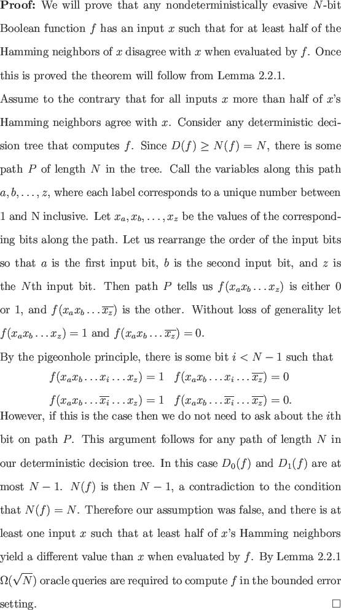

With an understanding of decision tree complexity we can now prove a lower bound on a class of evasive functions. In analogy to evasive functions whose deterministic decision tree complexity is N we call functions with nondeterministic decision tree complexity N Nondeterministically evasive. Every nondeterministically evasive functions is evasive.

This proof establishes that nondeterministically evasive functions have inputs that are sensitive to negation on at least half of their bits; the result then follows from Lemma 2.2.1. Not all evasive functions are nondeterministically evasive. OR is an example of a nondeterministically evasive function; since Beals et al. provide an O() algorithm to compute the OR of N bits, this lower bound is asymptotically tight.